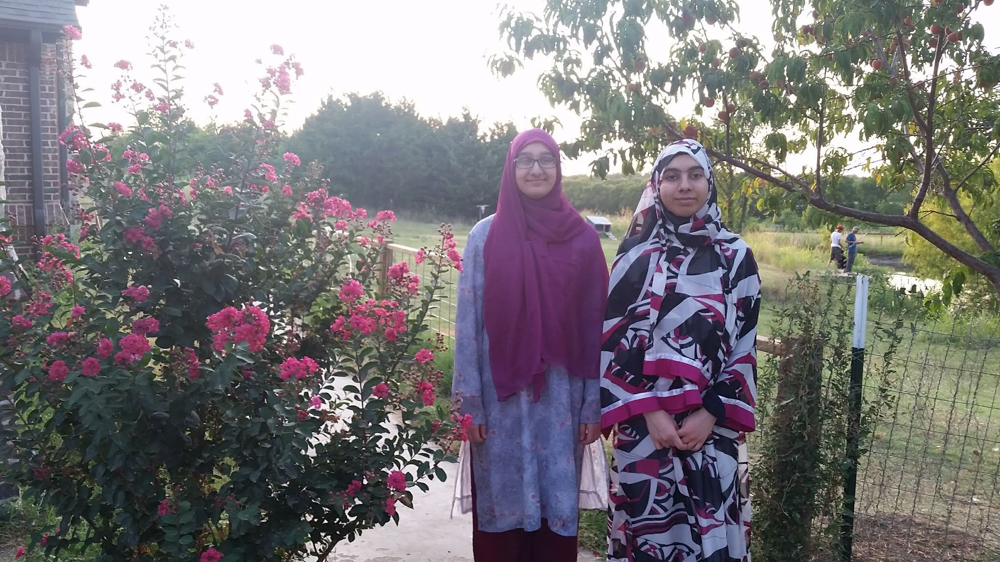

| Name | Age | Relationship |
|---|---|---|
| Farruq | 40 something | Dad |
| Asma | Classified | Mom |
| Abdullah | 17 | Older Bro |
| Aysha | 12 | Younger Sister |
| Yusuf | 8 | Younger Bro |
| Biscuit | 2 | Cat |
| Twix | 1 | Cat |
Like I mentioned earlier, my family isn't too big or too small.
We're a pretty cool family, though. Here's a chart to get to
know them a little better.
These are my parents on a cruise.
This next one is of my older brother and his catch on a fishing trip.
The one after that is a picture of my younger sister and I at the beach. The kid on the
right is my younger brother. The last one is a group shot. This was an awesome
trip because it was completely spontaneous and on a Sunday.
This is a picture of my brother after his 8th grade graduation.
This one is from Aysha's 12th birthday. (Yes, those are Pusheen cake pops.)
The one after that is her posing with flowers.
The first one is of Yusuf after Eid prayer a couple summers ago. The
second one is from that same summer. We're petting my uncle's cats.
The last one is Aysha and I posing with a pretty bush in front of the same uncle's
house from this summer.

Here are a bunch of pictures of our cats, Twix and Biscuit.
In the first one, Twix is hanging his head over the side of my bunkbed. The
second one is him sleeping on the sofa. The third one is him putting
a not so subtle pause on my studying. The fourth one is of biscuit
having a jolly good time in the laundry basket. In the fifth one, we had
wrapped Biscuit up in a swaddle. The sixth picture is of Biscuit demanding
that I pay attention to her and not my book. The last one is of them chilling
in my window.